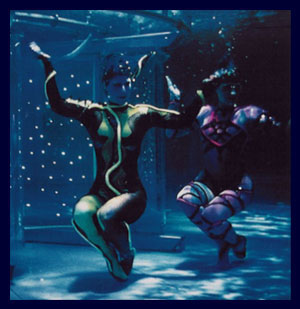

| |
|
Ballet-Tanz
[vom Jahrbuch 2000, Autor: Hartmut Regitz] |
 |
|
Aus der Männerdomäne ist eine Frauendomäne geworden: Spätestens
seit 1816 tanzt man unter Wasser. Ein Bericht aus dem Berliner Friedrichstadtpalast von
Hartmut Regitz |
|
Ein "Ballettbein", bitte! In "gestreckter Rückenlage",
wie es so schön im Verbandsdeutsch heißt, liegen die Nixen auf dem Nass. Und selbst wenn
die sechs Schwimmerinnen dabei nicht die geringste Anstrengung erkennen lassen, heben sie zur selben
Zeit kraftvoll das rechte Bein, bis es sich senkrecht zur Wasseroberfläche streckt. Sinken sie
in selber Position jedoch ab, bis nur noch der Fuß, "mit dem Wasserspiegel zwischen Knie
und Knöchel" sichtbar ist, erhöht sich nicht nur der Schwierigkeitsgrad von 1.6 auf
2.1 Punkte. Man spricht auf einmal auch vom "Tauchboot" - nicht sonderlich überraschend
angesichts einer Sportart, die zur Hauptsache im Wasser stattfindet. So nennen sich ein paar der
wichtigsten Wettkampfübungen "Albatros", "Delphin", "Schwertfisch"
oder "Tümmler". Andere wiederum tragen Bezeichnungen wie "Ballettbein",
"Ballerina", "Pirouette" oder "Spagat" und verraten einen Einfluß,
der uns hier mehr interessiert.
"Ich habe eine tänzerische Grundausbildung", gesteht Yvonne Klehr und spricht von
ihrem Sport, als wär` er eine Kunst: "Wir schwimmen nicht einfach hin und her, sondern
können uns dabei künstlerisch entfalten. Und doch ist und bleibt Synchronschwimmen für
mich in erster Linie ein Sport, selbst wenn seine ästhetische Ausrichtung unverkennbar ist."
Yvonne Klehr versteht sich nach wie vor als Sportlerin, schließlich entstammt sie einer sportlichen
Familie. Sie sieht sich inzwischen aber auch als Künstlerin - und verdient damit Geld. "Ich
habe mich zwar als Synchronschwimmerin qualifiziert, trainierte erst beim SV Empor, dann beim
Polizei-Sport-Verein Berlin, nahm an Meisterschaften teil, war Berliner Vizemeisterin." Seit ein
paar Jahren arbeitet sie jedoch, mittlerweile 21-jährig, als Managerin der Gruppe Aqua de Luna
und schwimmt bei allen Shows des Berliner Friedrichstadtpalastes von Erfolg zu Erfolg - erst als
"Fisch" bei den "Sternen", dann im "Cinema", zuletzt in den "Elements".
Auch bei der "Revue Berlin", der neuesten Produktion, ist sie mit ihren "Mädels"
ab Herbst wieder dabei.
Die Frauen bleiben beim Schwimmen unter sich. Allenfalls in Amerika kennt man William Aaron May als das
höchst bedauernswerte Mitglied eines Nationalteams, das sich umsonst um seine Teilnahme an den
Olympischen Sommerspielen in Sydney bemüht. Dabei ist gerade das Synchronschwimmen, lange Zeit
auch als Kunstschwimmen, Reigenschwimmen oder Wasserballett bekannt, ursprünglich eine männliche
Erfindung. "Das schönste Schauspiel ist es für die Zuschauer", wird im Programmheft zu
den 44. Deutschen Meisterschaften im Synchronschwimmen eine Zeitschrift aus dem Jahr 1816 zitiert, "wenn
sie Jünglinge und Männer im Spiegel des Wassers sich üben und in mannigfaltigen bildlichen
Kunstfiguren sich gruppieren sehen". Knapp hundert Jahre später, 1907, schaffte das andere
Geschlecht seinen Durchbruch, und ein Verdrängungskampf begann. Seit 1992 gehört die Sportart
zu Olympia - die einzige Disziplin als reine Frauendomäne.
Yvonne Klehr kann darin nichts Diskriminierendes finden: "Was soll daran schön sein, wenn ein
behaartes Männerbein aus dem Wasser ragt?" - und verweist auf die Voraussetzungen ihres Sports:
auf die Lust am Schwimmen, die Dehnbarkeit der Muskeln, eine gute Lunge, die Eleganz der Bewegung, die
Gleitfähigkeit des Körpers, sein Styling, der Sexappeal, nicht zu vergessen: auf eine
Musikalität, ohne die unter oder über Wasser überhaupt nichts läuft. "Synchronized
swimming", wie man seit 1934, seit der Weltausstellung in Chicago sagt, meint schließlich nicht
nur die Gleichschaltung innerhalb einer Gruppe, sondern den Einklang mit der Musik. Deshalb gibt es außer
dem Wettbewerb zu zweit, zu viert oder zu vielen auch eine Pflicht und Kür für die
"Solistin". Und wie bei anderen "kompositorischen Sportarten" führen die Kanadier,
die Amerikaner, die Franzosen, Japaner und Russen.
Allein lässt sich allerdings kein Bild legen, keine Choreografie entwickeln, und darauf kommt es den
"Mädels" in Berlin vor allem an. Das Haar frisch gegelt, das Gesicht gut geschminkt, die Nase
fest verklammert, stellen sie sich nicht mehr der Konkurrenz. Sie machen vielmehr das Bad zur Bühne,
tauchen tanzend - oder bilden, auf dem Wasser liegend, kaleidoskopartig ein Kreuz. Alles fließt, und
deshalb gruppieren sich die Synchronschwimmerinnen immer wieder aufs neue. Ein "Ballettbein" kann
zwischendurch ja ganz schön sein. Ein Spagat ist spektakulär. Aber der Sport verlangt nach mehr,
und mit ihrer Kunst sind Klehr & Co. noch lange nicht am Ende. |
|
|